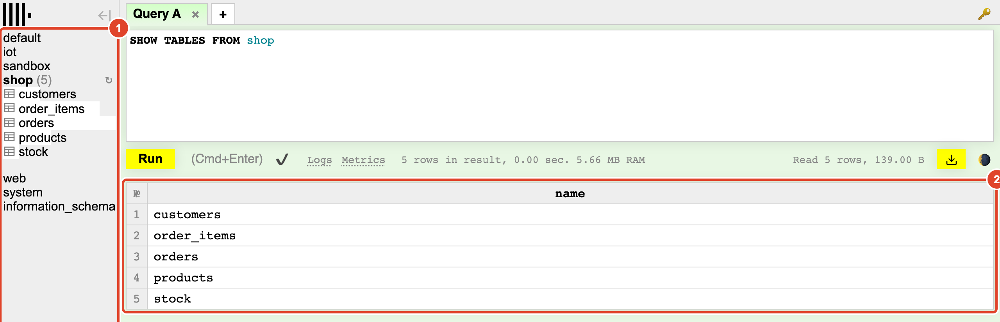
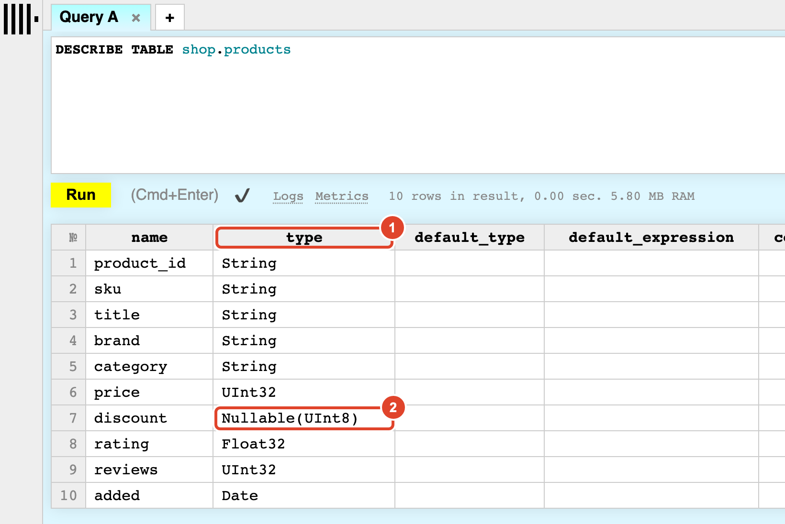
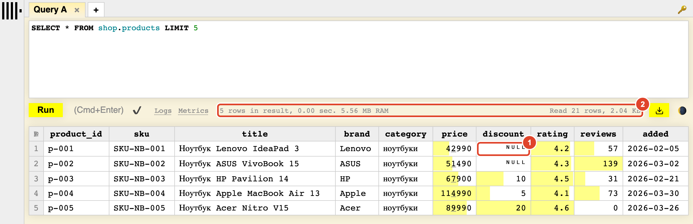
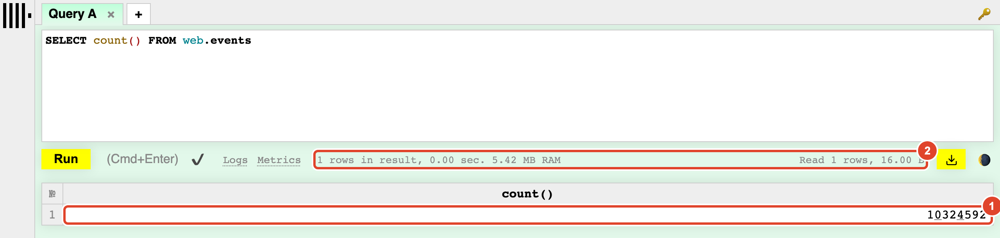

База данныхdatabase
Именованная группа таблиц на сервере. Нужна, чтобы таблицы разных задач не смешивались и могли называться одинаково.
Примерshop, web, iot, sandbox; служебная — system.
Где§1, §3
Справочник по ClickHouse · модуль 1 · первые данные
Глава 1.1
В главе — пять команд, которые показывают, что лежит на сервере: базы, таблицы, их столбцы, первые строки и число строк. С ними можно изучить любую таблицу, не зная о ней заранее ничего.
Суть за две минуты
На сервере лежат базы, в базах — таблицы, в таблицах — столбцы. Таблицу называют полным именем: shop.products.
База — до точки, таблица — после.
SHOW DATABASES, SHOW TABLES, DESCRIBE, SELECT * … LIMIT и count().
Каждая отвечает на свой вопрос.
В web.events 10 миллионов строк. С LIMIT 5 сервер читает десяток строк за 5 мс, без него — гигабайт.
count() отвечает мгновенно: число строк у сервера записано заранее.
Зачем это знатьЛюбой запрос начинается с вопроса «где лежат данные». Ответ всегда из трёх частей: какой сервер, какая база, какая таблица.
course-clickhouse.Что есть что: шкаф — сервер course-clickhouse, полка — база shop, папка — таблица products. Бланк — строка про один товар, графа «цена» — столбец price. Полное имя shop.products — это «полка “Магазин”, папка “Товары”».
Зачем это знатьЕсли не назвать базу, сервер будет искать таблицу в своей базе по умолчанию — и не найдёт.
shop.productsРаботает всегда и везде. Так написаны все запросы книги.productsСервер ищет в текущей базе. После входа это default, и там таблицы нет.Узнать текущую базу можно функцией currentDatabase(). Сменить её в clickhouse-client — командой USE:
USE shop SHOW TABLES SELECT count() FROM orders
По словам: после USE shop короткое имя orders значит shop.orders. Действует до выхода из клиента.
последний запрос вернул 120 — столько заказов в магазине.
Play UI отправляет каждый запрос серверу отдельно, по HTTP, и сервер не помнит, что было в прошлом запросе. USE shop выполнится без ошибки, но следующий запрос снова начнётся в базе default:
USE shop → пустой ответ, ошибки нет SELECT currentDatabase() → default
clickhouse-client держит одно соединение на весь сеанс, поэтому USE в нём работает. Чтобы запросы из книги одинаково выполнялись в обоих клиентах, пишите полное имя.
course :) USE shop USE shop Query id: 9ac2d38b-4853-438c-a35d-8768b49e7e8d Ok. 0 rows in set. Elapsed: 0.002 sec. course :) SHOW TABLES SHOW TABLES Query id: dc5dd5b3-7c59-4dfc-8d64-47fb3bbf69f1 ┌─name────────┐ 1. │ customers │ 2. │ order_items │ 3. │ orders │ 4. │ products │ 5. │ stock │ └─────────────┘ 5 rows in set. Elapsed: 0.003 sec. course :) SELECT count() FROM orders SELECT count() FROM orders Query id: 1185cac1-55c6-4fa5-b756-7baaabb270aa ┌─count()─┐ 1. │ 120 │ └─────────┘ 1 row in set. Elapsed: 0.001 sec.
Зачем этот шагСписок баз вы уже видели в главе 0.1. Теперь заглянем в одну из них.
ДелаемSHOW TABLES FROM shop

Тот же список виден слева (1): щелчок по базе раскрывает её таблицы. Запрос (2) удобнее, когда таблиц много или вы работаете в терминале.
productsТовары: название, бренд, категория, цена, скидка, рейтинг.
stockОстатки: сколько штук товара на каком складе.
customersПокупатели: имя, город, дата регистрации, сегмент.
ordersЗаказы: кто, когда, сумма, статус, доставка.
order_itemsПозиции заказов: какой товар, сколько штук, по какой цене.
в ответе пять имён: customers, order_items, orders, products, stock.
Без FROM команда показывает таблицы текущей базы. В Play UI это всегда default, а она пустая — ответ без строк. SHOW TABLES FROM sandbox тоже пока ничего не вернёт: таблицы в песочнице вы создадите сами в главе 1.4.
Зачем этот шагПрежде чем читать строки, узнаём графы бланка: какие столбцы есть и что в них может лежать.
ДелаемDESCRIBE TABLE shop.products

По строке на столбец. Нужны первые две колонки ответа: имя (name) и тип (type, рамка 1). Остальные пустые — они понадобятся в главах про значения по умолчанию и сжатие.
| Тип в ответе | Что в нём лежит | Столбцы products |
|---|---|---|
String | текст любой длины | product_id, sku, title, brand, category |
UInt32 | целое без знака, от 0 до 4 млрд | price, reviews |
Float32 | дробное число | rating |
Date | дата без времени | added |
Nullable(UInt8) | целое от 0 до 255 или пусто | discount |
Все типы подробно — глава 1.2. Как устроено «пусто» и чем оно дорого — глава 1.3.
в ответе 10 строк, и у discount тип Nullable(UInt8) (рамка 2): скидка есть не у всех товаров.
Слово TABLE можно опустить, а DESCRIBE сократить до DESC: DESC shop.orders. Попробуйте на других таблицах — например, у shop.orders 12 столбцов, среди них created DateTime (дата со временем) и paid Bool (да или нет).
Команду, которой таблицу создали, показывает SHOW CREATE TABLE shop.products. В ней кроме столбцов видны движок ENGINE = MergeTree и порядок хранения ORDER BY product_id — их разбирает глава 1.4.
Зачем этот шагТипы говорят, что может лежать в столбце. Посмотрим, что лежит на самом деле, — на пяти строках.
ДелаемSELECT * FROM shop.products LIMIT 5
По словам: «выбери (SELECT) все столбцы (*) из (FROM) таблицы shop.products, не больше (LIMIT) пяти строк».

первая строка — p-001, «Ноутбук Lenovo IdeaPad 3», цена 42990.
Без указания порядка LIMIT берёт первые попавшиеся строки — те, что сервер прочитал раньше. На стенде это первые пять товаров, потому что таблица хранится упорядоченной по product_id. Но рассчитывать на это нельзя: на большой таблице порядок может меняться от запуска к запуску. Нужен определённый порядок — пишите ORDER BY, глава 1.6.
Жёлтые полосы в числовых столбцах Play UI рисует сам: чем больше число, тем длиннее. В clickhouse-client пустое значение выглядит как ᴺᵁᴸᴸ — мелкими буквами, чтобы не спутать со строкой «NULL».
Зачем это знатьВ магазине 21 товар, а в web.events — 10 миллионов строк. Один и тот же SELECT * на них стоит по-разному.
С LIMIT 5 сервер останавливается, как только набрал пять строк. Без него сервер читает с диска всю таблицу, это гигабайт, и отправляет 10 миллионов строк. clickhouse-client начнёт печатать их все, и терминал будет занят много минут.
вы взяли за правило: незнакомую таблицу смотрите только с LIMIT.
Оба запроса на полосах выполнены в clickhouse-client с добавкой FORMAT Null — «посчитай, но ничего не выводи». Так терминал ничего не печатает, и замер показывает только работу сервера. Прочитанные строки и байты взяты из журнала запросов system.query_log, его разбирает глава 3.6. На вашем компьютере миллисекунды будут другими, строки и байты — те же.
Play UI ограничивает вывод: получив тысячу строк, он разрывает соединение, и сервер прекращает работу. Число прочитанных к этому моменту строк зависит от скорости компьютера.
Зачем этот шагВ web.events 12 столбцов, и в терминале строка не помещается по ширине. Её удобнее читать столбиком: имя — значение.
В clickhouse-client поставьте в конце запроса \G вместо точки с запятой:
SELECT * FROM web.events LIMIT 1\G
Row 1: ────── event_time: 2026-08-01 00:07:37 session_id: 248349 user_id: 285338 event_type: add_to_cart url: /cart product_id: p-005 category: ноутбуки price: 89990 device: mobile city: Москва source: search duration_ms: 441
Читается так: в 00:07 первого августа посетитель с телефона положил в корзину ноутбук p-005 за 89 990 ₽; страница загрузилась за 441 мс.
вы видите 12 строк вида «имя: значение».
\G — команда самого clickhouse-client, другие клиенты её не принимают. Везде работает та же просьба словами — FORMAT Vertical в конце запроса. Пример: SELECT * FROM web.events LIMIT 1 FORMAT Vertical. Play UI тогда покажет ответ текстом в столбик. Форматы вывода подробно — глава 4.1.
Зачем этот шагПервый вопрос к любой таблице — «большая ли она». От ответа зависит, можно ли смотреть её целиком.
ДелаемSELECT count() FROM web.events

count() — функция «посчитай строки». Ответ 10324592 (рамка 1) пришёл за миллисекунды, а справа в полосе (рамка 2) — Read 1 rows, 16.00 B. Сервер не перебирал 10 миллионов строк: он записывает их число, когда строки вставляют, и при запросе берёт готовое.
Что есть что: коробка — порция строк, которую сервер записал на диск за одну вставку. Надпись — число строк в описании порции. Кладовщик — сервер. «Read 1 rows, 16 B» — прочитаны только надписи.
ответ — 10324592, прочитана одна строка.
Готовое число годится, только пока вопрос — «сколько строк всего». Как только появится условие («сколько покупок 10 октября»), серверу придётся читать столбцы и проверять каждую строку. Это всё равно быстро — ClickHouse для этого и сделан, — но в полосе уже будут миллионы прочитанных строк. Условия — глава 1.6, порции строк на диске — глава 3.2.
Функцию можно писать и заглавными: COUNT() тоже сработает. А вот имена баз, таблиц и столбцов чувствительны к регистру: shop.Products — ошибка.
Зачем это знатьСервер ведёт справочник о самом себе — служебную базу system. Из неё одним запросом видно все таблицы с числом строк и размером.
SELECT database, name, total_rows, formatReadableSize(total_bytes) AS size
FROM system.tables
WHERE database IN ('shop', 'web', 'iot')┌─database─┬─name────────┬─total_rows─┬─size───────┐ 1. │ iot │ readings │ 3174480 │ 22.97 MiB │ 2. │ shop │ customers │ 20 │ 3.97 KiB │ 3. │ shop │ order_items │ 271 │ 10.41 KiB │ 4. │ shop │ orders │ 120 │ 12.16 KiB │ 5. │ shop │ products │ 21 │ 5.19 KiB │ 6. │ shop │ stock │ 42 │ 1.67 KiB │ 7. │ web │ events │ 10324592 │ 353.60 MiB │ └──────────┴─────────────┴────────────┴────────────┘
formatReadableSize переводит байты в КиБ и МиБ. Размер — на диске, в сжатом виде. Сжатие — глава 3.1.
у web.events 353 МиБ, у всего магазина вместе — меньше 35 КиБ.
Зачем это знатьЕсли вы прошли справочник по MongoDB, каждой команде главы там есть пара. Магазин shop — тот же.
| Вопрос | MongoDB | ClickHouse |
|---|---|---|
| какие базы | show dbs | SHOW DATABASES |
| перейти в базу | use shop | USE shop |
| что в базе | show collections | SHOW TABLES FROM shop |
| из чего состоит | — смотрят на документы | DESCRIBE shop.products |
| первые записи | db.products.find().limit(5) | SELECT * FROM shop.products LIMIT 5 |
| сколько записей | db.products.countDocuments() | SELECT count() FROM shop.products |
Отличие — в строке «из чего состоит». У документов MongoDB поля могут быть любыми, и у двух товаров они бывают разными. В ClickHouse столбцы и типы заданы у таблицы заранее, одни на все строки. Поэтому DESCRIBE отвечает на вопрос точно.
Найдите строку, похожую на то, что видите у себя, и раскройте её.
Сервер искал таблицу в текущей базе default. Пишите полное имя: shop.products. Подсказку Maybe you meant сервер даёт сам — прочитайте её.
Имена баз, таблиц и столбцов чувствительны к регистру. Ключевые слова (select, SELECT) и большинство функций — нет.
Таблица называется orders, во множественном числе. Точный список даст SHOW TABLES FROM shop.
Базы стенда: shop, web, iot, sandbox. Код ошибки другой — 81, база не найдена.
Play UI выполняет за раз один запрос. Точка с запятой в конце допустима, но после неё ничего быть не должно. Второй запрос откройте в новой вкладке — кнопка + над полем — или выполняйте по очереди. clickhouse-client принимает несколько запросов через ;.
Запрос был SELECT * FORM shop.products. Позиция 15 — номер символа, на котором остановился разбор запроса. FORM разобрано как имя, и shop.products после него оказалось лишним. Ошибку ищите в слове перед указанной позицией.
Сервер отправляет все 10 миллионов строк. Нажмите Ctrl + C — клиент отменит запрос. Допишите LIMIT — §6. Play UI в таком случае сам остановится на тысяче строк.
iot.readings и сколько у неё столбцов?SELECT count() FROM iot.readings вернёт 3174480. DESCRIBE iot.readings покажет 6 столбцов: ts, sensor_id, warehouse, zone, temperature, humidity.
USE web, потом SELECT count() FROM events — и получили ошибку. Почему?Play UI шлёт каждый запрос отдельно, сервер не помнит прошлый USE. Второй запрос искал events в базе default. Нужно полное имя web.events.
count() по 10 миллионам строк отвечает быстрее, чем SELECT * … LIMIT 5?Число строк сервер записывает при вставке и при count() берёт готовое — читает одну служебную строку. А LIMIT 5 всё-таки читает настоящие строки со всеми двенадцатью столбцами.
NULL в столбце discount. Скидка у товара нулевая?Нет. NULL — значения нет вовсе: скидку не назначали. Нулевая скидка была бы числом 0. Тип Nullable(UInt8) в DESCRIBE как раз разрешает столбцу быть пустым — глава 1.3.
SHOW DATABASES
SHOW TABLES FROM shop
SELECT currentDatabase()
DESCRIBE shop.products
SHOW CREATE TABLE shop.products
SELECT * FROM shop.products LIMIT 5
SELECT count() FROM web.events
USE shop # только в clickhouse-client
… LIMIT 1\G # столбиком, clickhouse-client
… FORMAT Vertical # столбиком везде
Именованная группа таблиц на сервере. Нужна, чтобы таблицы разных задач не смешивались и могли называться одинаково.
Примерshop, web, iot, sandbox; служебная — system.
Где§1, §3
Набор строк одинакового устройства: у всех строк одни и те же столбцы с одними и теми же типами.
Примерshop.products — 21 строка, 10 столбцов.
Где§1, §4
Правило, какие значения может хранить столбец: текст, целое, дробное, дата. Задаётся при создании таблицы и одинаков для всех строк.
Примерprice UInt32, title String, discount Nullable(UInt8).
Где§4, глава 1.2
Отметка «значения нет». Возможна только в столбце типа Nullable(…). Отличается от нуля и от пустой строки: те — значения.
Примеру ноутбука p-001 discount = NULL — скидку не назначали.
Где§5, глава 1.3
Часть запроса, которая ограничивает число строк в ответе. Сервер прекращает чтение, как только набрал нужное число.
ПримерSELECT * FROM web.events LIMIT 5 — прочитано 10 строк вместо 10 миллионов.
Где§5, §6
Функция, которая считает строки. Без условий отвечает по готовому числу строк, не читая сами строки.
ПримерSELECT count() FROM web.events → 10324592, прочитано 16 байт.
Где§8
база.таблица.SHOW TABLES FROM база — что в базе; DESCRIBE — столбцы и их типы.SELECT * FROM … LIMIT 5 — первые строки. Без LIMIT большую таблицу не открывайте.count() без условий отвечает мгновенно: число строк записано заранее.USE в Play UI не действует. В книге и в Play UI — полные имена.Дальше — глава 1.2: какие ещё бывают типы и как выбрать тип для столбца.